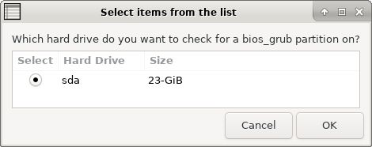

When a computer is booted in BIOS mode (either because its the only boot mode or because you force legacy boot mode in an UEFI system) grub-pc package is used. The grub-efi package is not used.
If you pretend to install grub-pc package grub into a MBR disk you probably won't have any problem.
However if you pretend to install grub-pc package grub into a GPT disk you need to make sure to have a bios_grub partition.
This option lets you check if a given hard disk in your system has the bios_grub partition or not.
If you think that you need to create a bios_grub partition please ask on your distribution usual support places. An option to help you to create a bios_grub partition is not on the short term Rescapp TODO list.
TIP: If you have a recent PC (from 2015 or more recent) stop trying to install your Operating Systems in BIOS mode/Legacy mode and use UEFI mode instead.
Step 1Rescapp searches for hard drives on your computer.
Step 2If such hard drives have been found, Rescapp displays a list of the hard drives. At the same time you are prompted:
Which hard drive do you want to check for a bios_grub partition on? You are supposed to choose the hard drive which has a GPT partition for which you want its bios_grub partition to be checked.

Step 3Rescapp with all the gathered information, is going to check if there is a bios_grub partition on your GPT hard drive.
Step 4You are informed about the bios_grub checking process.You either get:
 [SUCCESS] A bios_grub partition was found! :)
[SUCCESS] A bios_grub partition was found! :)
 [ERROR] A bios_grub partition was not found. :(
[ERROR] A bios_grub partition was not found. :(